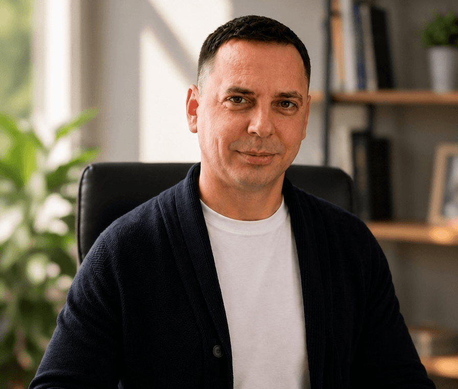

ТОВ «ЛАЙ ДЕТЕКШИН ГРУП» — команда психологів і юристів, яка проводить перевірки на поліграфі для бізнесу, приватних клієнтів та юридичних справ по всій Україні.
Філософія
Основоположні принципи роботи
01
Допомогти правдивому перевіреному «залишитися» правдивим
Результат перевірки на поліграфі є імовірнісним — завжди існує ймовірність помилки. Поліграфолог зобовʼязаний діяти так, щоб людина, яка правдиво відповідає на тестові питання, успішно пройшла тест.
02
Допомогти клієнту побачити проблему
Поліграфолог зобовʼязаний точно визначити проблемні теми (якщо це кадрове тестування) або причетність перевіреної особи до протиправних дій (якщо це тестування в рамках розслідування).
Для забезпечення цих принципів експерт-поліграфолог зобовʼязаний досконало володіти методиками проведення досліджень із застосуванням поліграфа та неухильно слідувати протоколу їх застосування. Усі поліграфологи ТОВ «ЛАЙ ДЕТЕКШИН ГРУП» не рідше одного разу на рік проходять курси підвищення кваліфікації — як в рамках компанії, так і на семінарах, конференціях та заходах професійних спільнот (Колегія поліграфологів України, Асоціація поліграфологів України).
01
Методики
Перевірені підходи різних шкіл
При проведенні тестувань на поліграфі використовуються переважно класичні методики шкіл США, перевірені часом. Крім цього, фахівці-поліграфологи компанії володіють також методиками інших шкіл (Росії, України).
02
Обладнання
Lafayette та Axciton (США)
Психофізіологічні дослідження проводяться на сучасному, одному з найкращих, обладнанні виробництва США — Lafayette і Axciton.
Lafayette InstrumentПоліграфи СШАAxciton SystemsПоліграфи США
03
Географія
Наша команда та офіси
Головний офіс «ЛАЙ ДЕТЕКШИН ГРУП» розташовується в Києві на проспекті Берестейський, 118, офіс 522–525. Крім цього, наші представники є у містах Львів і Дніпро. За потреби можливий виїзд для проведення перевірки в будь-який інший населений пункт країни.
Штат компанії — це психологи й юристи, у тому числі колишні співробітники правоохоронних органів. Це дозволяє ефективно виконувати завдання не лише в рамках кадрових тестувань, а й при проведенні службових розслідувань.
Київ · головний офісЛьвівДніпроВиїзд по Україні
04
Експерти
Наша команда
Директор компанії
Ганна Нестеренко
Поліграфолог · Психолог
Член ГО «Колегія поліграфологів України» · стаж з 2016 року · проводить перевірки англійською мовою
Спеціальна освіта
«Застосування поліграфа при проведенні розслідувань і роботі з кадрами» — Lie Detection Group (2016)
«Практичні аспекти психофізіології для поліграфологів» — курс Президента Всеукраїнської асоціації поліграфологів Дубровського А.Є. (2016)
«Валідність методики психологічних досліджень із застосуванням поліграфа» — Чак Слапскі, КНДІСЕ, Колегія поліграфологів України (2016)
«Підвищення кваліфікації поліграфологів…» — ІПК НАВС України (2021)
Людмила Цупило
Поліграфолог
Член ГО «Колегія поліграфологів України» · стаж з 2017 року · вища юридична освіта
Спеціальна освіта
«Психофізіологічні методи дослідження та експертизи з використанням поліграфа» — ОНУ ім. Мечникова, ВАП (2017)
«Застосування поліграфа при проведенні розслідувань і роботі з кадрами» — Lie Detection Group

Михайло Шестаков
Поліграфолог
Член ГО «Колегія поліграфологів України» · вища юридична освіта · стаж відбору персоналу НПУ з 2015 року · поліграф з грудня 2016
Спеціальна освіта
Навчання в Міжнародній асоціації поліграфологів і компанії Axciton Systems, Inc. (USA)
Лідія Харевич
Поліграфолог
Вища освіта
Спеціальна освіта
«Використання поліграфа при проведенні розслідувань та роботі з кадрами» (2024)
Курс підвищення кваліфікації Lie Detection Group LLC (2026)
Обговорюючи з замовниками мету тестувань, ми насамперед намагаємося зрозуміти їх «біль» — фундаментальну причину звернення. Якщо існує інший, більш ефективний спосіб вирішення задачі, ми повідомляємо про це замовника — і не навʼязуємо непотрібні послуги.
Конфіденційність — пріоритет
Ми з високою відповідальністю ставимося до питання конфіденційності. Згідно з політикою компанії, вся інформація, отримана в ході тестування на поліграфі, належить виключно замовнику перевірки. За бажанням клієнта може бути укладений договір про конфіденційність (NDA).